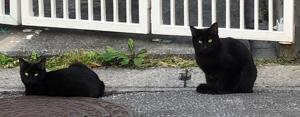
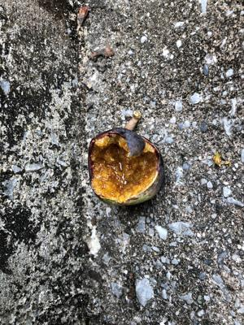
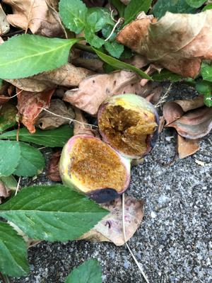

うるがいの話 ある日
最新: 無謀なこと【うるがいの話 ある日】とは 一日だけのプログです
『うるがいの話』の最新一日だけのプログで、通信料が少なく経済的だ。カニの画像をクリックすると全ての日付が載る『うるがいの話』サイトを表示します
|
|
【うるがいの話】 うるがい(ｳﾙｶﾞｲ urugai)とは、『もずくがに』の名前でとても大きくなります。 |
|---|---|
|
|
【カミマヤーの話】 猫のことを方言でマヤーといいます。カミマヤーとは、神の猫のことです。 |
|
【タナガーの話】 たながー（ﾀﾅｶﾞｰtanagaa）とは手長えびのことで、何種類かあり大きいのは車 エビぐらいになります。 |

|
【ぶながぁの話】 ぶながー(bunagaa)とは、赤い髪の毛、赤い身体、そして身長は１ｍ２０ｃｍ ぐらい、川の蟹を食べているの目撃された。場所は沖縄県国頭郡大宜味村のと ある村僕の隣近所に住んでいる爺さんから、聞いた話です。 |
|
|
【ギーマの話】 ギーマ(giima)とは、山原の里山に咲くスズランに似た、 花を付けます。実は食べられます、 気が付くと口の周りが紫になっています。 |
2021年12月22日 (水）無謀なこと
16:31
  
昨日、ジョギングをすべく近くの公園を通り抜けようとするとイチジクににた
実が、半分かじら実を除くと熟している。おやこれは オオイタビ ではと近く
を探索するとそれらしき蔓草があった。熟した実が一つあったので、半分に分
けた。一応、食べられそうなので少し味見してみた。少し甘味があったが、ま
だまだだなと捨てる。・・とおや、手にネバネバがまるでボンドを使ったあと
のようだ、手はまだしも唇もネバネバで唇の上下がくっつく。無謀なことをし
たもんだ。さすが、山原の人と言われるような気がする。一日雨・・、走れな
い。
１６時２０分 ビットコインの総資産 ￥１６、２７６